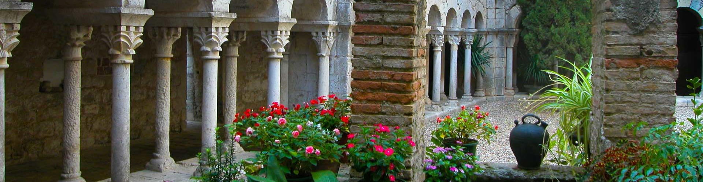

Ruta · Girona
Aquest itinerari circular us permetrà conèixer alguns dels elements més significatius de la vall de Sant Daniel, un dels espais naturals més ben conservats de la ciutat. Principalment per pistes…